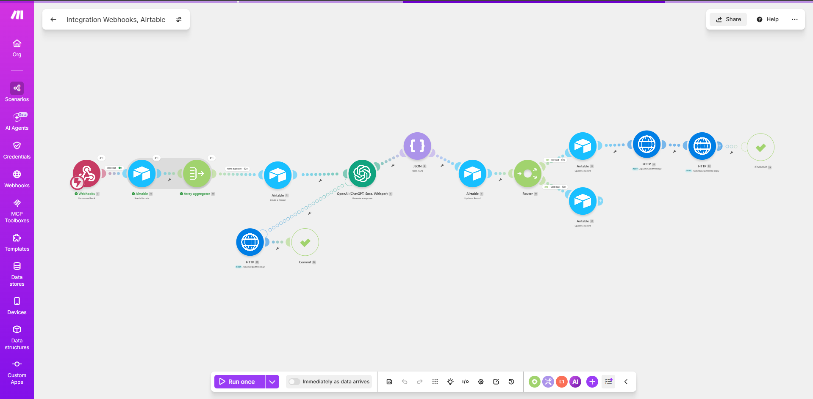

Speed-to-Lead Responder
Lead Response
⤢ View full sizeProblem
Leads go cold in minutes. Manual follow-up means most new inquiries never get a fast reply — and the deal goes to whoever answered first.
Solution
New leads trigger an instant, personalized response in under 60 seconds, logged and tracked end-to-end across Airtable with Slack alerts.
Make.comZapierAirtableSlackWebhooks
Sub-60-second reply
Higher lead conversion
Zero leads dropped